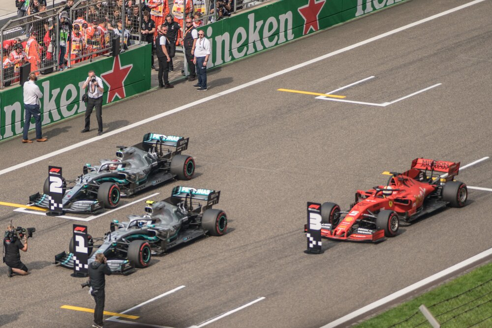

A Formula One season consists of several races held in different circuits all over the world. These races are referred to as a Grand Prix, which is a French word meaning “grand prize” in English. Throughout the races all participating teams must adhere to a set of rules, or a “formula”, established by the FIA, and the circuits in which the races are held are graded “1” by that same organization. Therefore, this competition was named Formula 1.
A Grand Prix is held over the duration of one weekend. Fridays are designated as a practice day, and typically two practice sessions are held that day. However, there are some exceptions to this like in Monaco where practice sessions are held on a Thursday. Qualifying sessions are held on Saturdays and the session will determine the starting order for the race, commonly referred to as the grid. The Grand Prix race is held on Sunday and is the main event of the weekend. All weekend days circuits organize different entertainment events, such as concerts or performances, for the attending fans.
Qualifying Session
In qualifying sessions, all 20 of the drivers are looking to set the fastest lap times to determine their starting place on the starting grid. The session Is split into three parts, Q1, Q2, and Q3. In Q1 the slowest five drivers are placed in the last five places on the grid. The remaining 15 drivers race to determine the next worst five starting positions in Q2. In Q3 though, the last ten drivers compete for first place to start in first place on Sunday’s Grand Prix. The drivers are given 15 minutes to try to set the fastest lap time, and the driver with the fastest lap time is awarded pole position, or first place, on the starting grid. The remaining drivers are placed on the starting grid according to their fastest lap times. If a car does not meet FIA regulations, the driver will be barred from the qualifying session, and they must start from the last position on the grid on Sunday. Any penalties are applied at the end of the qualifying session.
The Grand Prix
A Grand Prix race begins with a warmup lap, and at the end of the lap the drivers are placed in their designated places on the starting grid. Five red lights will begin to light up, in intervals of one second. All five lights will have lit up, and the race begins when the lights are switched off. If a car stalls, the race is restarted. The race can also be restarted in case of a serious accident or bad weather. If a race is restarted, the drivers will reassemble in the starting format and the race will restart. If the race is stopped early due to circumstances, the race will restart from a standstill. A Grand Prix is limited to a maximum of two hours, and most circuits cover around 305 km. Drivers are allowed pit stops to change tires or other damaged components.